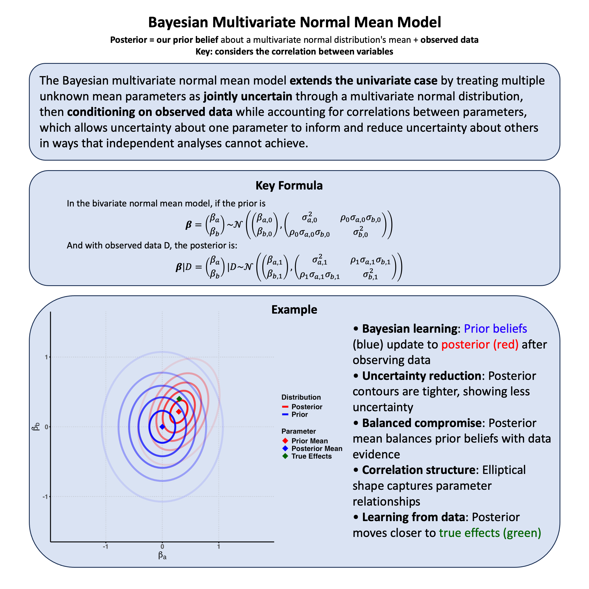

Bayesian Mixture Model#
A Bayesian mixture model assumes that parameters come from a weighted combination of different distributions rather than a single distribution, allowing the model to automatically identify and handle heterogeneity in parameter types while providing uncertainty quantification about which component each parameter belongs to.
Graphical Summary#

Key Formula#
In a Bayesian mixture model, we assume that the parameter \(\beta\) is generated from a weighted sum of \(C\) different distributions, where each distribution corresponds to a different “component” representing different types of effects. The probability density function (PDF) of the mixture prior can be written as:
where:
\(p(\beta)\) is the overall prior probability density function for the parameter \(\beta\)
\(C\) is the number of component distributions
\(\pi_c\) is the mixture weight for the \(c\)-th component (with \(\sum_{c=1}^{C} \pi_c = 1\) and \(\pi_c \geq 0\))
\(p_c(\beta)\) is the probability density function of the \(c\)-th component, typically \(p_c(\beta) = \mathcal{N}(\mu_c, \sigma_c^2)\)
Technical Details#
The Core Idea: Multiple Sources of Effects#
In statistical genetics, we often encounter parameters that don’t come from a single, simple distribution. Think of it this way: genetic effects can be small (most variants), moderate (some important variants), or large (rare but impactful variants). A Bayesian mixture model captures this reality by saying “the parameter \(\beta\) could come from any of several different distributions, and we’ll let the data tell us which one is most likely.”
Component Assignment: Which Group Does This Parameter Belong To?#
Since we don’t know a priori which component generated our parameter \(\beta\), we introduce a latent (hidden) variable \(z\) that acts like a “group membership card”:
The probability that \(\beta\) belongs to component \(c\) is simply the mixture weight: $\( P(z = c) = \pi_c \)$
Once we know the component assignment, the parameter follows that component’s distribution: $\( \beta \mid z = c \sim p_c(\beta) \)$
Think of \(z\) as nature’s coin flip that decides which distribution to draw \(\beta\) from, but we never get to see the result of that coin flip directly.
Setting Up the Prior Structure#
Mixture Weights - How Common Is Each Component?
The mixture weights \(\boldsymbol{\pi} = (\pi_1, \pi_2, \ldots, \pi_C)\) tell us how frequently we expect each component to occur. We typically give them a Dirichlet prior:
This ensures the weights are positive and sum to 1. If you set all \(\alpha_c = 1\), you’re saying “I have no strong opinion about which components are more common” - the weights will be roughly equal on average.
Component-Specific Parameters
Each component \(c\) has its own parameters that define its shape. For genetic effect sizes, we often use normal distributions:
Component 1 (null effects): \(p_1(\beta) = \mathcal{N}(0, \sigma_1^2)\) where \(\sigma_1^2\) is very small
Component 2 (moderate effects): \(p_2(\beta) = \mathcal{N}(0, \sigma_2^2)\) where \(\sigma_2^2\) is moderate
Component 3 (large effects): \(p_3(\beta) = \mathcal{N}(0, \sigma_3^2)\) where \(\sigma_3^2\) is large
Each \(\sigma_c^2\) gets its own prior based on your domain knowledge.
Learning from Data: Posterior Component Membership#
Here’s where the magic happens. After seeing the data, we can calculate how likely it is that parameter \(\beta\) belongs to each component using Bayes’ rule:
This posterior probability has an intuitive interpretation: it weighs how well component \(c\) explains the observed \(\beta\) (the numerator \(\pi_c p_c(\beta)\)) against how well all components explain it (the denominator).
If \(\beta\) is close to zero, the “null effect” component will have high posterior probability. If \(\beta\) is large, the “large effect” component will dominate.
Why Mixture Models Are Powerful in Genetics#
Biological Realism: Genetic architectures naturally have multiple classes of effects. Most variants do nothing, some have small effects, and a few have large effects. Mixture models capture this heterogeneity directly.
Automatic Effect Classification: You don’t need to pre-specify which genetic variants have large vs. small effects. The model learns this from the data and gives you posterior probabilities for each classification.
Robust to Outliers: If a few genetic effects are much larger than expected, they get assigned to a “large effect” component rather than distorting the estimates for typical effects.
Principled Uncertainty: Instead of hard classifications (“this effect is large”), you get probabilistic statements (“this effect has an 85% chance of being large”). This uncertainty naturally propagates through downstream analyses.
Flexible Modeling: You can easily accommodate different biological scenarios by changing the number and types of components. Want to model population-specific effects? Add population-specific components. Suspect some effects are exactly zero? Include a point mass at zero.
Example#
Imagine you’re studying how a single genetic variant affects human height and weight. You have a simple but fundamental question: Does this genetic variant affect just one trait, both traits, or neither? And if it affects both traits, how correlated are these effects?
We have discussed this in the topic of Bayesian multivariate normal mean model, but back then the assumption is that there IS correlation between the traits and our focus was on the estimation of genetic effect.
Here this question gets to the heart of pleiotropy - the phenomenon where a single gene influences multiple traits. A variant might only affect height (think growth hormone pathways), only affect weight (metabolic pathways), or affect both in correlated ways (general body size regulation).
We’ll simulate data for \(N\) individuals with two phenotypes (height and weight) and one genotype variant, and also the genetic effect \(\boldsymbol{\beta}\).
The model is simply: \(\mathbf{Y} = \mathbf{X}\boldsymbol{\beta} + \boldsymbol{\varepsilon}\)
But here’s the key insight: \(\boldsymbol{\beta}\) can come from different “component models” representing different biological mechanisms.
Component Models: The Biological Stories#
We’ll define 7 component models, each telling a different biological story:
Individual Components (M0-M6):#
M0 (Null): “This variant does nothing” - \(\boldsymbol{\beta}\) = (0, 0)
M1 (Height Only): “This variant only affects height” - \(\boldsymbol{\beta}\) = (\(\beta_1\), 0)
M2 (Weight Only): “This variant only affects weight” - \(\boldsymbol{\beta}\) = (0, \(\beta_2\))
M3 (Perfect Correlation): “Effects are perfectly correlated” - \(\beta_2\) = \(\beta_1\)
M4 (Weak Correlation): “Effects are weakly related” - correlation = 0.1
M5 (Medium Correlation): “Effects are moderately related” - correlation = 0.5
M6 (Strong Correlation): “Effects are strongly related” - correlation = 0.8
Mixture Models:#
No Pleiotropy: Mixture of M0, M1, M2 (M0 gets higher weight since most variants are null)
Pleiotropy: Mixture of M3, M4, M5, M6 (equal weights)
Generate Data From Simulation#
rm(list=ls())
library(MASS) # for mvrnorm
library(ggplot2)
library(dplyr)
library(gridExtra)
set.seed(27)
# Simulation parameters
N <- 1000 # Sample size (number of individuals)
effect_sd <- 0.3 # Standard deviation of non-zero genetic effects
error_sd <- 1.0 # Standard deviation of phenotype noise
# Generate genotype data for one variant
# Minor allele frequency = 0.3
# Genotypes are coded as 0, 1, 2 (number of minor alleles)
X <- rbinom(N, 2, 0.3)
Building the Core Effect Generation Function#
The heart of our simulation lies in generating different patterns of genetic effects. Each component model represents a different biological mechanism for how our variant might affect the two traits. We need a function that can create these diverse patterns on demand.
#' Generate genetic effects for individual component models
generate_component_effects <- function(effect_sd, component_type) {
# Initialize effect vector (both traits)
effects <- c(0, 0)
switch(component_type,
"M0" = {
# Null model: no effects on either trait
effects <- c(0, 0)
},
"M1" = {
# Height-only model: effect on height, zero on weight
effects <- c(rnorm(1, 0, effect_sd), 0)
},
"M2" = {
# Weight-only model: zero on height, effect on weight
effects <- c(0, rnorm(1, 0, effect_sd))
},
"M3" = {
# Perfect correlation: height and weight effects are identical
height_effect <- rnorm(1, 0, effect_sd)
effects <- c(height_effect, height_effect)
},
"M4" = {
# Weak correlation (r = 0.1): effects are slightly related
correlation <- 0.1
Sigma <- matrix(c(1, correlation, correlation, 1), 2, 2) * effect_sd^2
effects <- mvrnorm(1, mu = c(0, 0), Sigma = Sigma)
},
"M5" = {
# Medium correlation (r = 0.5): effects are moderately related
correlation <- 0.5
Sigma <- matrix(c(1, correlation, correlation, 1), 2, 2) * effect_sd^2
effects <- mvrnorm(1, mu = c(0, 0), Sigma = Sigma)
},
"M6" = {
# Strong correlation (r = 0.8): effects are highly related
correlation <- 0.8
Sigma <- matrix(c(1, correlation, correlation, 1), 2, 2) * effect_sd^2
effects <- mvrnorm(1, mu = c(0, 0), Sigma = Sigma)
}
)
return(effects)
}
This function captures the essence of each biological story. For the null variant (M0), effects are exactly zero. For trait-specific variants (M1, M2), only one trait is affected. For pleiotropic variants (M3-M6), we generate correlated effects using different correlation structures.
#' Generate effects for individual component models
generate_component_effects <- function(n_effects, effect_sd, component_type) {
effects <- matrix(0, nrow = n_effects, ncol = 2)
switch(component_type,
"M0" = {
# Null: no effects
effects[] <- 0
},
"M1" = {
# Height only
effects[, 1] <- rnorm(n_effects, 0, effect_sd)
effects[, 2] <- 0
},
"M2" = {
# Weight only
effects[, 1] <- 0
effects[, 2] <- rnorm(n_effects, 0, effect_sd)
},
"M3" = {
# Perfect correlation
height_effects <- rnorm(n_effects, 0, effect_sd)
effects[, 1] <- height_effects
effects[, 2] <- height_effects # Perfect correlation
},
"M4" = {
# Weak correlation (r = 0.1)
correlation <- 0.1
Sigma <- matrix(c(1, correlation, correlation, 1), 2, 2) * effect_sd^2
effects <- mvrnorm(n_effects, mu = c(0, 0), Sigma = Sigma)
},
"M5" = {
# Medium correlation (r = 0.5)
correlation <- 0.5
Sigma <- matrix(c(1, correlation, correlation, 1), 2, 2) * effect_sd^2
effects <- mvrnorm(n_effects, mu = c(0, 0), Sigma = Sigma)
},
"M6" = {
# Strong correlation (r = 0.8)
correlation <- 0.8
Sigma <- matrix(c(1, correlation, correlation, 1), 2, 2) * effect_sd^2
effects <- mvrnorm(n_effects, mu = c(0, 0), Sigma = Sigma)
}
)
return(effects)
}
#' Generate effects for mixture models
generate_mixture_effects <- function(n_effects, effect_sd, mixture_type) {
if (mixture_type == "no_pleiotropy") {
# M0 gets higher weight (most variants are null)
components <- sample(c("M0", "M1", "M2"), n_effects, replace = TRUE, prob = c(0.6, 0.2, 0.2))
} else if (mixture_type == "pleiotropy") {
# Equal mixture of M3, M4, M5, M6
components <- sample(c("M3", "M4", "M5", "M6"), n_effects, replace = TRUE, prob = c(1/4, 1/4, 1/4, 1/4))
}
effects <- matrix(0, nrow = n_effects, ncol = 2)
component_labels <- character(n_effects)
for (i in 1:n_effects) {
comp <- components[i]
effects[i, ] <- generate_component_effects(1, effect_sd, comp)
component_labels[i] <- comp
}
return(list(effects = effects, components = component_labels))
}
models <- list(
M0 = matrix(c(0, 0, 0, 0), 2, 2), # Null
M1 = matrix(c(1, 0, 0, 0), 2, 2), # Height only
M2 = matrix(c(0, 0, 0, 1), 2, 2), # Weight only
M3 = matrix(c(1, 1, 1, 1), 2, 2), # Perfect correlation
M4 = matrix(c(1, 0.8, 0.8, 1), 2, 2), # Strong correlation
M5 = matrix(c(1, 0.5, 0.5, 1), 2, 2), # Medium correlation
M6 = matrix(c(1, 0.1, 0.1, 1), 2, 2) # Weak correlation
)
# Define mixture models
no_pleiotropy_components <- c("M0", "M1", "M2")
pleiotropy_components <- c("M3", "M4", "M5", "M6")
# Mixture weights
no_pleiotropy_weights <- c(0.5, 0.25, 0.25)
pleiotropy_weights <- rep(1/4, 4)
cat("No Pleiotropy Mixture:\n")
cat("Components:", no_pleiotropy_components, "\n")
cat("Weights:", no_pleiotropy_weights, "\n\n")
cat("Pleiotropy Mixture:\n")
cat("Components:", pleiotropy_components, "\n")
cat("Weights:", pleiotropy_weights, "\n")
No Pleiotropy Mixture:
Components: M0 M1 M2
Weights: 0.5 0.25 0.25
Pleiotropy Mixture:
Components: M3 M4 M5 M6
Weights: 0.25 0.25 0.25 0.25
Data Generation#
# Parameters
n_individuals <- 20
true_mixture <- "pleiotropy" # Choose which mixture generates the data
effect_scale <- 2 # Scale factor for effect sizes
# Generate genotypes (0, 1, 2 with MAF = 0.3)
maf <- 0.3
p_genotypes <- c((1-maf)^2, 2*maf*(1-maf), maf^2)
genotypes <- sample(0:2, n_individuals, replace = TRUE, prob = p_genotypes)
# Function to sample from a mixture model
sample_from_mixture <- function(components, weights, scale = 1) {
# Sample component
component_idx <- sample(1:length(components), 1, prob = weights)
chosen_component <- components[component_idx]
# Sample beta from the chosen component
cov_matrix <- models[[chosen_component]] * scale^2
# Handle the null case (M0)
if (all(cov_matrix == 0)) {
beta <- c(0, 0)
} else {
# Add small diagonal to ensure positive definite
cov_matrix <- cov_matrix + diag(0.01, 2)
beta <- mvrnorm(1, mu = c(0, 0), Sigma = cov_matrix)
}
return(list(beta = beta, component = chosen_component))
}
# Generate true effect from the mixture
if (true_mixture == "no_pleiotropy") {
result <- sample_from_mixture(no_pleiotropy_components, no_pleiotropy_weights, effect_scale)
} else {
result <- sample_from_mixture(pleiotropy_components, pleiotropy_weights, effect_scale)
}
true_beta <- result$beta
true_component <- result$component
# Generate phenotypes
baseline_height <- 170 # cm
baseline_weight <- 70 # kg
residual_sd <- c(8, 5) # residual standard deviations
# Genetic effects
genetic_effects <- outer(genotypes, true_beta)
# Environmental effects
environmental_effects <- cbind(
rnorm(n_individuals, 0, residual_sd[1]),
rnorm(n_individuals, 0, residual_sd[2])
)
# Final phenotypes
phenotypes <- matrix(c(baseline_height, baseline_weight), n_individuals, 2, byrow = TRUE) +
genetic_effects + environmental_effects
colnames(phenotypes) <- c("height", "weight")
# Create dataset
data <- data.frame(
id = 1:n_individuals,
genotype = genotypes,
height = phenotypes[, 1],
weight = phenotypes[, 2]
)
Bayesian Inference#
The key idea of the Bayesian mixture model is that we don’t know which component the genetic effect comes from. We treat the component assignment as a latent variable and compute posterior probabilities for each component.
# Function to compute log-likelihood for given beta values
log_likelihood <- function(beta, genotypes, phenotypes) {
n <- nrow(phenotypes)
ll <- 0
for (i in 1:n) {
# Predicted phenotype for individual i
pred <- c(baseline_height, baseline_weight) + genotypes[i] * beta
# Residual covariance matrix (assumed independent)
residual_cov <- diag(residual_sd^2)
# Add to log-likelihood
diff <- phenotypes[i, ] - pred
ll <- ll - 0.5 * t(diff) %*% solve(residual_cov) %*% diff -
0.5 * log(det(2 * pi * residual_cov))
}
return(as.numeric(ll))
}
# Function to compute log-prior for beta given component
log_prior <- function(beta, component_name, scale = effect_scale) {
cov_matrix <- models[[component_name]] * scale^2
# Handle null case
if (all(cov_matrix == 0)) {
return(ifelse(all(abs(beta) < 0.01), 0, -Inf))
}
# Add small diagonal for numerical stability
cov_matrix <- cov_matrix + diag(0.01, 2)
# Compute log density
lp <- -0.5 * t(beta) %*% solve(cov_matrix) %*% beta -
0.5 * log(det(2 * pi * cov_matrix))
return(as.numeric(lp))
}
# Function to compute posterior probability for each component
# This integrates over all possible beta values for each component
compute_component_posterior <- function(component_name, genotypes, phenotypes) {
if (component_name == "M0") {
# Null model: beta = (0, 0)
beta <- c(0, 0)
ll <- log_likelihood(beta, genotypes, phenotypes)
lp <- log_prior(beta, component_name)
return(ll + lp)
}
# For non-null components, we need to integrate over beta
# We'll use a grid approximation for illustration
beta_height_range <- seq(-3, 3, length.out = 50)
beta_weight_range <- seq(-3, 3, length.out = 50)
grid <- expand.grid(beta_height = beta_height_range, beta_weight = beta_weight_range)
log_marginal <- -Inf
for (i in 1:nrow(grid)) {
beta <- c(grid$beta_height[i], grid$beta_weight[i])
ll <- log_likelihood(beta, genotypes, phenotypes)
lp <- log_prior(beta, component_name)
if (is.finite(ll + lp)) {
log_marginal <- log(exp(log_marginal) + exp(ll + lp))
}
}
# Normalize by grid size
log_marginal <- log_marginal - log(nrow(grid))
return(log_marginal)
}
# Compute posterior probabilities for each component
cat("\nComputing component posterior probabilities...\n")
component_names <- names(models)
log_posteriors <- numeric(length(component_names))
for (i in 1:length(component_names)) {
comp <- component_names[i]
log_posteriors[i] <- compute_component_posterior(comp, genotypes, phenotypes)
cat("Component", comp, ": log posterior =", round(log_posteriors[i], 2), "\n")
}
# Normalize to get probabilities
log_posterior_max <- max(log_posteriors)
posterior_probs <- exp(log_posteriors - log_posterior_max)
posterior_probs <- posterior_probs / sum(posterior_probs)
names(posterior_probs) <- component_names
cat("\nPosterior probabilities for each component:\n")
for (i in 1:length(component_names)) {
cat(component_names[i], ":", round(posterior_probs[i], 4), "\n")
}
Computing component posterior probabilities...
Component M0 : log posterior = -145.02
Component M1 : log posterior = -148.77
Component M2 : log posterior = -144.32
Component M3 : log posterior = -143.95
Component M4 : log posterior = -144.18
Component M5 : log posterior = -144.3
Component M6 : log posterior = -144.45
Posterior probabilities for each component:
M0 : 0.0826
M1 : 0.0019
M2 : 0.1664
M3 : 0.2416
M4 : 0.1916
M5 : 0.1701
M6 : 0.1458
Then we compute posterior probabilities for mixture models
no_pleio_posterior <- sum(posterior_probs[no_pleiotropy_components])
pleio_posterior <- sum(posterior_probs[pleiotropy_components])
cat("\nMixture Model Posterior Probabilities:\n")
cat("P(No Pleiotropy | Data) =", round(no_pleio_posterior, 4), "\n")
cat("P(Pleiotropy | Data) =", round(pleio_posterior, 4), "\n")
# Within-mixture component probabilities
if (pleio_posterior > no_pleio_posterior) {
cat("\nPleiotropy is more likely. Within pleiotropy mixture:\n")
pleio_components_probs <- posterior_probs[pleiotropy_components]
pleio_components_probs <- pleio_components_probs / sum(pleio_components_probs)
for (i in 1:length(pleiotropy_components)) {
cat(pleiotropy_components[i], ":", round(pleio_components_probs[i], 4), "\n")
}
} else {
cat("\nNo pleiotropy is more likely. Within no-pleiotropy mixture:\n")
no_pleio_components_probs <- posterior_probs[no_pleiotropy_components]
no_pleio_components_probs <- no_pleio_components_probs / sum(no_pleio_components_probs)
for (i in 1:length(no_pleiotropy_components)) {
cat(no_pleiotropy_components[i], ":", round(no_pleio_components_probs[i], 4), "\n")
}
}
# Predictive inference: What effect sizes are most likely?
cat("\nPredictive Summary:\n")
cat("True generating component:", true_component, "\n")
cat("Most probable component:", names(which.max(posterior_probs)), "\n")
cat("True mixture:", true_mixture, "\n")
cat("Most probable mixture:", ifelse(pleio_posterior > no_pleio_posterior, "pleiotropy", "no_pleiotropy"), "\n")
Mixture Model Posterior Probabilities:
P(No Pleiotropy | Data) = 0.251
P(Pleiotropy | Data) = 0.749
Pleiotropy is more likely. Within pleiotropy mixture:
M3 : 0.3226
M4 : 0.2558
M5 : 0.227
M6 : 0.1946
Predictive Summary:
True generating component: M6
Most probable component: M3
True mixture: pleiotropy
Most probable mixture: pleiotropy
Visualization#
# Create results data frame
results_df <- data.frame(
Component = component_names,
Posterior_Probability = posterior_probs,
Mixture = ifelse(component_names %in% no_pleiotropy_components,
"No Pleiotropy", "Pleiotropy"),
Is_True = component_names == true_component
)
# Plot component posterior probabilities
p1 <- ggplot(results_df, aes(x = Component, y = Posterior_Probability, fill = Mixture)) +
geom_col(position = position_dodge(width = 0.8), width = 0.6, color = "black", linewidth = 1) +
geom_text(aes(label = ifelse(Posterior_Probability > 0.01,
round(Posterior_Probability, 3), "")),
position = position_dodge(width = 0.8), vjust = -0.5, size = 5, fontface = "bold") +
scale_fill_manual(values = c("No Pleiotropy" = "tomato", "Pleiotropy" = "skyblue")) +
labs(
title = "Component Posterior Probabilities",
subtitle = paste("True component:", true_component),
y = "Posterior Probability",
x = "Component",
fill = "Mixture"
) +
theme_minimal(base_size = 20) +
theme(
plot.title = element_text(hjust = 0.5, face = "bold"),
plot.subtitle = element_text(hjust = 0.5),
axis.title.y = element_text(face = "bold"),
axis.title.x = element_text(face = "bold"),
axis.text.x = element_text(face = "bold"),
axis.text.y = element_text(face = "bold"),
legend.title = element_text(face = "bold"),
legend.text = element_text(face = "bold"),
legend.position = "bottom"
)
print(p1)

# Plot mixture-level probabilities
mixture_df <- data.frame(
Mixture = c("No Pleiotropy", "Pleiotropy"),
Probability = c(no_pleio_posterior, pleio_posterior),
Is_True = c(true_mixture == "no_pleiotropy", true_mixture == "pleiotropy")
)
p2 <- ggplot(mixture_df, aes(x = Mixture, y = Probability, fill = Is_True)) +
geom_col(position = position_dodge(width = 0.8), width = 0.6, color = "black", linewidth = 1) +
geom_text(aes(label = round(Probability, 3)),
position = position_dodge(width = 0.8), vjust = -0.5, size = 6, fontface = "bold") +
scale_fill_manual(values = c("FALSE" = "lightgray", "TRUE" = "darkgreen")) +
labs(
title = "Mixture Model Posterior Probabilities",
subtitle = paste("True mixture:", true_mixture),
y = "Posterior Probability",
x = "Mixture Model",
fill = "True Model"
) +
ylim(0, 1.05) +
theme_minimal(base_size = 20) +
theme(
plot.title = element_text(hjust = 0.5, face = "bold"),
plot.subtitle = element_text(hjust = 0.5),
axis.title.y = element_text(face = "bold"),
axis.title.x = element_text(face = "bold"),
axis.text.x = element_text(face = "bold"),
axis.text.y = element_text(face = "bold"),
legend.title = element_text(face = "bold"),
legend.text = element_text(face = "bold"),
legend.position = "bottom"
)
print(p2)

(optional) Connection to Meta-Analysis Random Effects#
The Bayesian mixture model for pleiotropy detection extends concepts from random effects meta-analysis in an important way:
Random Effects Meta-Analysis assumes all study effects come from a single normal distribution: $\(\beta_i \sim \mathcal{N}(\beta, \tau^2)\)$
This models quantitative heterogeneity - all studies estimate the same underlying effect, but with continuous variation due to different populations, methods, or sampling error.
Mixture Models for Pleiotropy allow effects to come from multiple distinct distributions: $\(\beta \sim \sum_{k=1}^K \pi_k \mathcal{N}(\mu_k, \Sigma_k)\)$
This models qualitative heterogeneity - genetic variants may have fundamentally different biological mechanisms rather than just varying continuously around a single effect pattern.
In our pleiotropy context:
Random effects approach would assume all variants have some degree of correlated effects across traits, with continuous variation in the correlation strength
Mixture model approach recognizes that some variants may be truly trait-specific (no pleiotropy) while others exhibit different discrete patterns of pleiotropic effects
The mixture model thus provides a more biologically realistic framework by allowing variants to belong to distinct mechanistic categories rather than forcing all genetic effects into a single continuous distribution.
Supplementary#
Graphical Summary#
library(ggplot2)
library(dplyr)
# Set parameters for two components
mu1 <- -1 # Mean of component 1
mu2 <- 2 # Mean of component 2
sigma1 <- 1.2 # SD of component 1
sigma2 <- 1.5 # SD of component 2
pi1 <- 0.4 # Weight of component 1
pi2 <- 0.6 # Weight of component 2
# Create data for plotting
x <- seq(-5, 6, length.out = 1000)
# Individual component densities
component1 <- pi1 * dnorm(x, mu1, sigma1)
component2 <- pi2 * dnorm(x, mu2, sigma2)
# Mixture density
mixture <- component1 + component2
# Create data frame for plotting
plot_data <- data.frame(
x = rep(x, 3),
density = c(component1, component2, mixture),
distribution = rep(c("Component 1", "Component 2", "Mixture"), each = length(x))
)
# Create the plot
p <- ggplot(plot_data, aes(x = x, y = density, color = distribution, linetype = distribution)) +
geom_line(aes(linewidth = distribution)) +
scale_linewidth_manual(values = c("Component 1" = 1.2,
"Component 2" = 1.2,
"Mixture" = 2.0)) +
scale_color_manual(values = c("Component 1" = "tomato",
"Component 2" = "#000080",
"Mixture" = "darkgreen")) +
scale_linetype_manual(values = c("Component 1" = "solid",
"Component 2" = "solid",
"Mixture" = "dashed")) +
labs(
title = "Bayesian Mixture Model: Two Components",
subtitle = expression(paste(pi[1], " = 0.4, ", pi[2], " = 0.6")),
x = expression(beta),
y = "Density",
color = "Distribution",
linetype = "Distribution"
) +
theme_minimal(base_size = 14) +
theme(
plot.title = element_text(hjust = 0.5, face = "bold"),
plot.subtitle = element_text(hjust = 0.5),
axis.title.y = element_text(face = "bold"),
axis.title.x = element_text(face = "bold"),
axis.text.x = element_text(face = "bold"),
axis.text.y = element_text(face = "bold"),
legend.title = element_blank(),
legend.text = element_text(face = "bold"),
legend.position = "bottom"
) +
guides(color = guide_legend(override.aes = list(linewidth = 1.5)),
linewidth = "none")
# Add vertical lines for component means and labels
p <- p +
geom_vline(xintercept = mu1, color = "tomato", linetype = "dashed", alpha = 0.7, linewidth = 1.2) +
geom_vline(xintercept = mu2, color = "#000080", linetype = "dotted", alpha = 0.7, linewidth = 1.2)
# Display the plot
print(p)
# Save the plot
ggsave("./cartoons/Bayesian_mixture_model.png", plot = p,
width = 10, height = 6,
bg = "transparent",
dpi = 300)
{kind=link}